从实验室到药瓶，从分子到治愈。
药片是高度工程化的产品——由有效成分、辅料、包衣组成，经过严格的质量控制、稳定性测试和监管审批，才能进入药瓶、来到你手中。
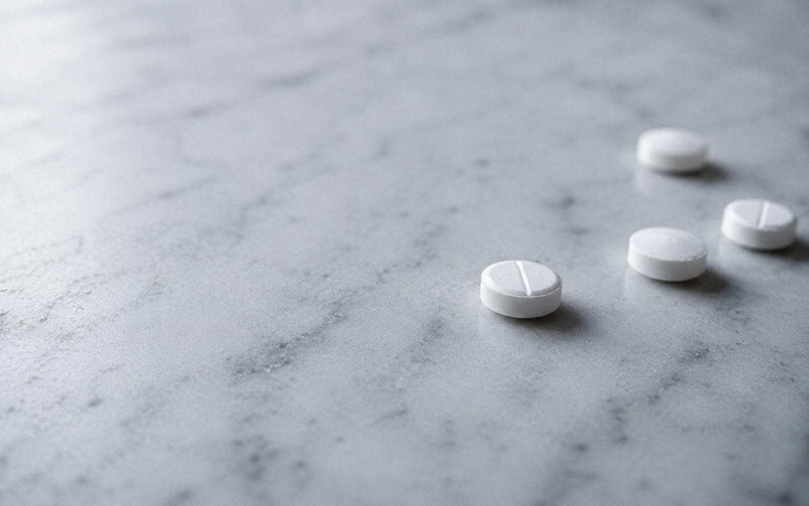
口服固体剂型是最古老也最广泛使用的给药方式
API 是药片中的活性成分，真正产生药理作用的物质。每颗药片的核心问题只有一个：这里的 API 够不够稳定、纯不纯，能不能以预期的速率释放。
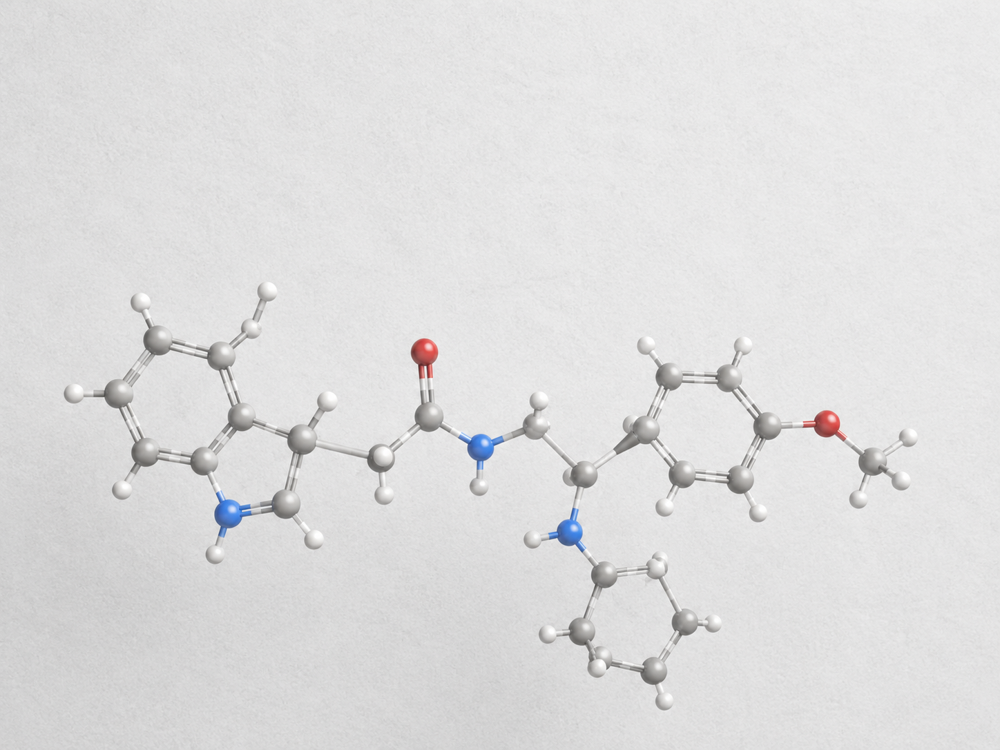
辅料不是药，但它决定药片能不能成型、能不能吞、能不能在规定时间内释放。
填充剂提供体积，粘合剂保证成型，崩解剂让药片进入体内迅速散开，润滑剂保证压片不粘冲头。每一种辅料都经过安全性评估和批次质量控制。
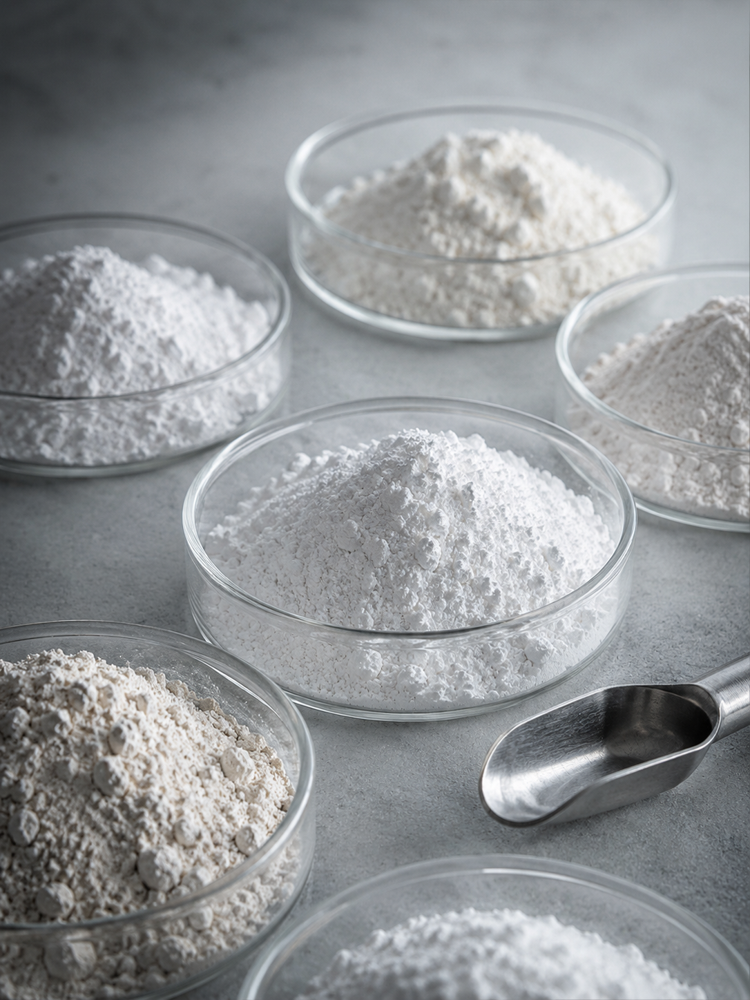
大多数人以为药片里全是药。有效成分占绝大部分，辅料只是少量填充。
剩下的空间由辅料、填充剂、崩解剂、粘合剂、包衣材料占据。多数情况下，药片里最大的成分是"让药片成为药片"的结构材料。
从微克到克，每个数字都经过精密计算
旋转压片机每分钟可压出数千片，每片重量、硬度、崩解时间必须完全一致。重复性是药片的品质底线。
包衣不只是让药片看起来专业——它保护药物不受湿气、光、空气降解。
它掩盖苦味改善服药体验；控制药物释放部位（肠溶包衣只在肠道溶解）；区分不同剂型与剂量。常见包衣材料：羟丙甲纤维素、乙基纤维素、丙烯酸树脂等。
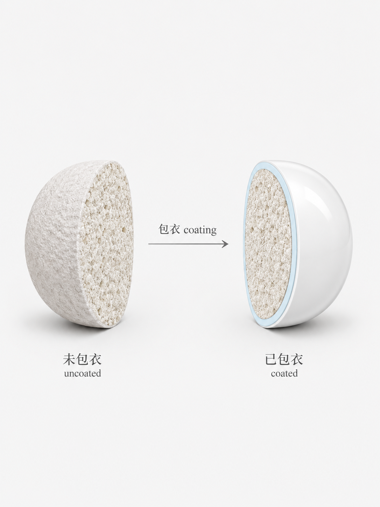
"剂量的意义取决于释放的速度。 一粒缓慢释放的药片，和一枚即刻溶解的药片， 治疗的不是同一种病。"
溶出度测试是药片质量最重要的体外指标之一
稳定性测试是药片生命周期的关键——加速稳定性（40°C/75%RH）模拟一年后的状态。
长期稳定性（25°C/60%RH）验证整个有效期；光照、冻融、运输模拟覆盖极端条件。每批必须证明在有效期内仍然安全有效。
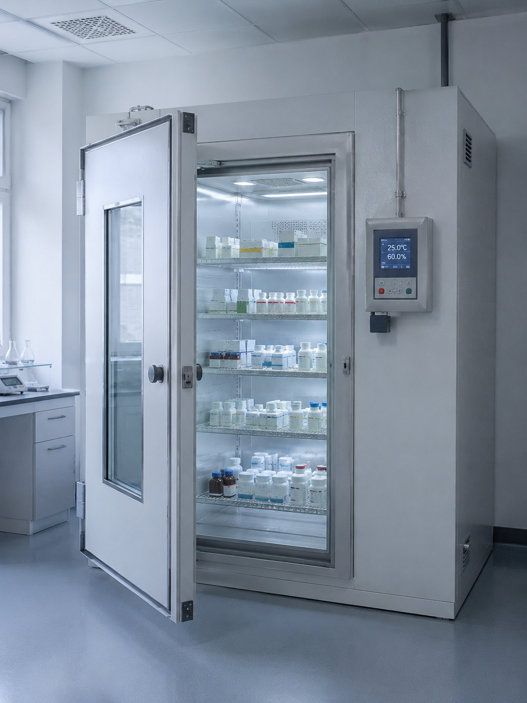
实验室里有一万个分子，最终只有一两个能成为你手里的那颗药。
一期临床试验是药物第一次进入人体，通常招募20-100名健康志愿者。目标不是验证疗效，而是确定安全性、耐受性和药代动力学特征。从极低剂量开始逐步爬坡，监测每项不良反应。
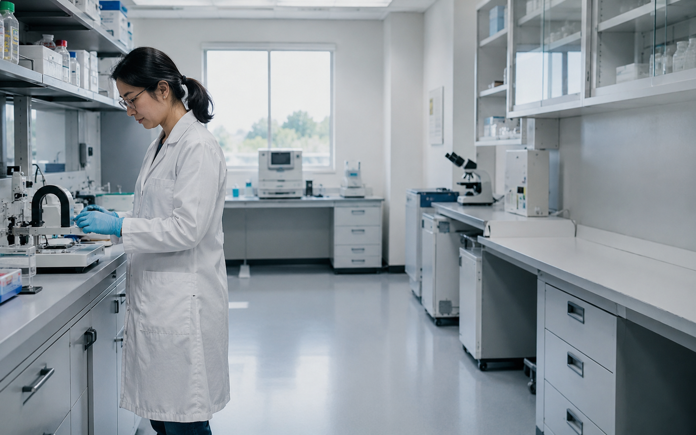
二期扩大到数百名患者，首次在目标人群中测试疗效。
这是最关键的筛子——约70%的药物在此阶段失败。有效剂量范围的确定、副作用谱的进一步刻画、疗效信号的统计显著性，都在这一阶段验证。
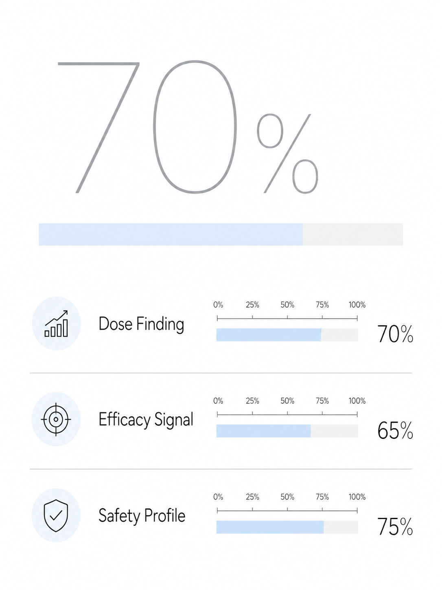
"新药批准不是判断药物有没有效， 而是判断获益是否大于风险。 每一枚药片走进药瓶之前，都要回答一个问题： 它值得被人类吞下吗？"
平均每个新药研发耗时10-15年，成本超过十亿美元。99%以上的候选分子永远到不了患者手中。
高投入、高风险、长周期的创新经济学
NDA 是药企向 FDA 提交的完整证据包——包含临床前与临床全部研究数据。
生产工艺与质量控制、稳定性数据、标签与说明书——典型 NDA 可达数十万页。审评通常需10-12个月，部分加速通道6-8个月。
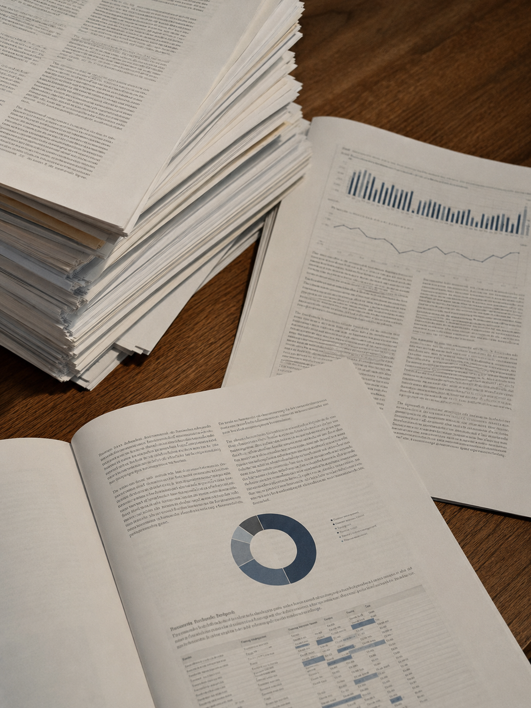
让每个人都能吃得起药，和发明新药同样重要。
仿制药需要证明与原研药生物等效——即在人体内达到相同的血药浓度曲线。Cmax（峰值浓度）和AUC（总暴露量）的90%置信区间必须在80%-125%之间。
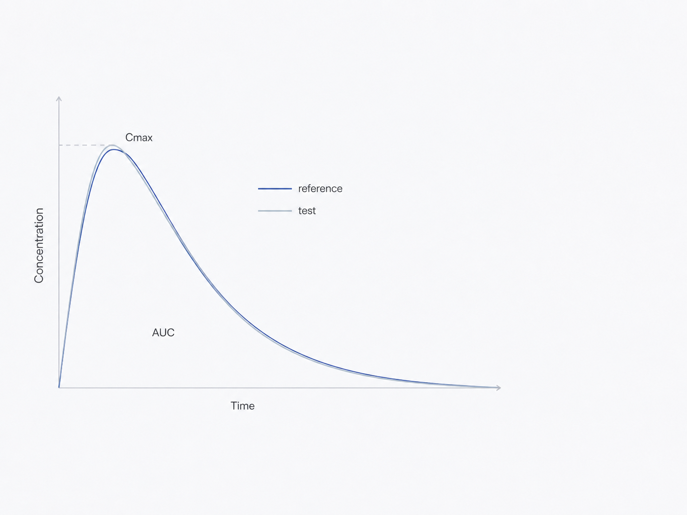
CGMP 要求质量嵌入每一个生产步骤——从原料进厂检验到环境监控。
从设备验证到批记录，从偏差调查到变更控制。FDA 不批准"好药"，只批准"按规范生产的药"。
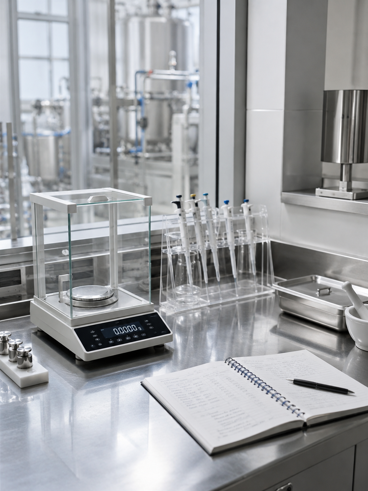
"WHO 基本药物清单上只有不到 600 种药。 它们覆盖了全世界绝大多数疾病。 但仍有三分之一的人口无法获得这些最基本的药片。 问题从来不是药不够，而是药到不了该到的人手里。"
3D 打印个性化剂量、数字药片内置传感器、纳米颗粒靶向递送、mRNA-LNP 技术让"药片"的定义不断扩展。未来的药可能不再是圆片——但"口服"仍将是最基础、最人性化的给药路径。
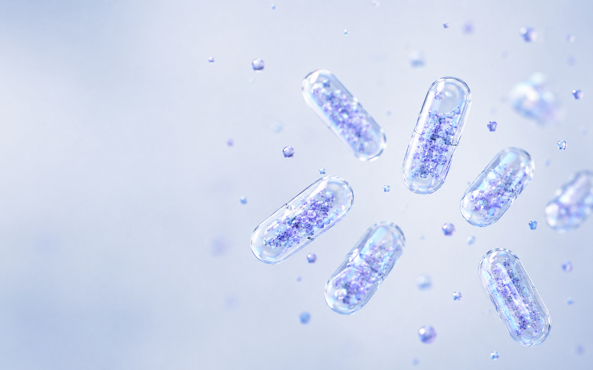
"每一颗药片都是化学、工程学、临床科学、 监管科学和全球供应链的交汇点。 它不是一颗小药丸—— 它是现代文明的结晶。"